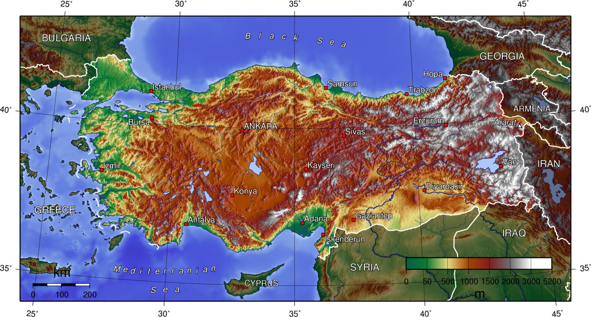
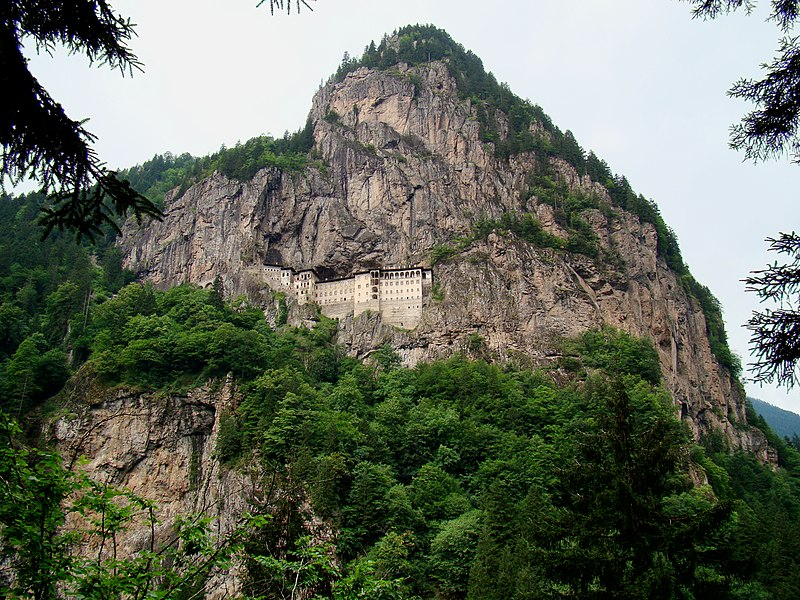
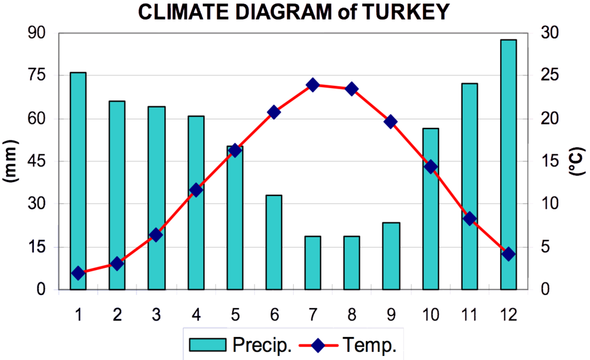
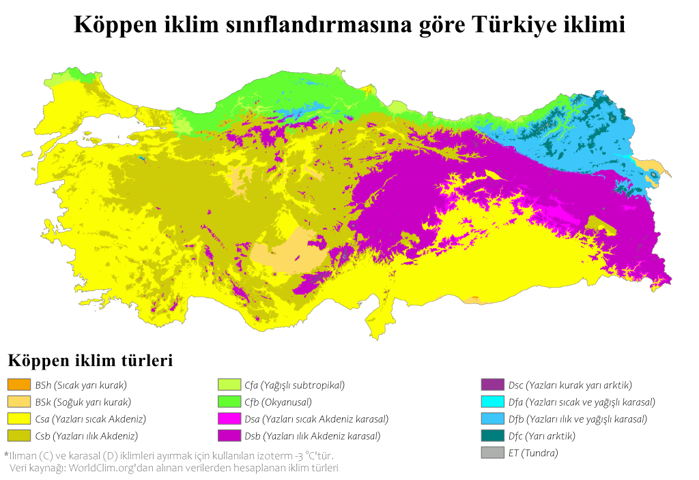

Coğrafya
Türkiye, iki kıtada toprağı bulunan bir Avrasya ülkesidir. Topraklarının %97'si Asya üzerinde bulunur ve bu kısım Anadolu diye adlandırılır. Kalan %3'lük kısım ise Avrupa kıtasında kalır ve Doğu Trakya diye adlandırılır. Marmara Denizi, Çanakkale ve İstanbul Boğazı Anadolu'yu Trakya'dan, Asya'yı Avrupa'dan ayırır.
Türkiye toprakları kabaca bir dikdörtgen şeklini andırır, 1.600 kilometre (1.000 mi) uzunluğunda ve 800 km (500 mi) genişliğindedir. 36° ve 42° kuzey paralelleri ile 26° ve 45° doğu meridyenleri arasına yerleşmiştir. Gölleriyle birlikte 783.562 kilometre karelik (300,948 sq mi) bir alanı kaplar. Bunun 755.688 kilometre karesi (291.773 sq mi) Asya topraklarını oluştururken, geriye kalan 23.764 kilometre karesi (9.174 sq mi) Avrupa topraklarını oluşturur. Bu rakamlarla, yüzölçümü açısından dünyanın en büyük 37. ülkesidir. Üç tarafı denizlerle çevrilidir. Batısında Ege Denizi, kuzeyinde Karadeniz ve güneyinde Akdeniz bulunmaktadır. Kuzeybatısında ise Marmara Denizi yer alır.
Türkiye'nin Avrupa'daki kısmı olan Doğu Trakya'da Yunanistan ve Bulgaristan ile sınırı bulunmaktadır. Asya'daki kısmı olan Anadolu'da ise dar kıyı ovalarıyla çevrilmiş yüksek bir merkezi platodur. Kuzeyde Köroğlu ve Kuzey Anadolu Dağları ile, güneyde Toros Dağları ile çevrilmiştir. Türkiye'nin doğusuna gidildikçe yükselti artar ve burası Fırat, Dicle, Aras gibi çeşitli nehirlerin kaynağıdır. Ayrıca 5.137 metre (16.854 ft) yüksekliğindeki Türkiye'nin en yüksek dağı olan Ağrı Dağı ve en büyük gölü olan Van Gölü de Doğu Anadolu'da yer alır. Türkiye, Anadolu toprakları üzerinde kuzeydoğuda Gürcistan, doğuda Ermenistan, Azerbaycan'a bağlı Nahçıvan Özerk Cumhuriyeti ve İran, güneydoğuda Irak ve Suriye ile komşudur.
Türkiye, yedi coğrafi bölgeye bölünmüştür. Bunlar Akdeniz, Doğu Anadolu, Ege, Güneydoğu Anadolu, İç Anadolu, Karadeniz ve Marmara bölgeleridir. Dar bir kemere benzeyen Karadeniz Bölgesi, Kuzey Anadolu boyunca düzensiz bir şekilde uzanır ve ülkenin toplam yüzölçümünün altıda birini oluşturur. Geleneksel bir eğilim olarak, doğuya doğru gidildikçe engebenin artmasına paralel olarak yaylacılığın arttığı görülür.
Türkiye'nin yer şekillerinin çeşitliliği, binlerce yıldır bölgenin arazisini şekillendiren yerin hareketliliğinin bir sonucudur. Üzerinde sönmüş volkanlar bulundurur ve hâlâ daha sıklıkla depremler meydana gelmektedir. Çanakkale ve İstanbul Boğazları, varlıklarını ülkedeki fay hatlarına borçludurlar. Ülkenin kuzeyinde ve doğusunda günümüzde de depremlere sebep olan büyük fay hatları vardır. Kuzey Anadolu Fay Hattı üzerinde 1999'da meydana gelen büyük Marmara depremi, binlerce insanın hayatını kaybetmesine sebep olmuştur.
Türkiye'nin topoğrafik haritası
Biyoçeşitlilik
Türkiye'nin olağanüstü ekosistemi ve habitat çeşitliliği, ülkede önemli bir tür çeşitliliğinin oluşmasını sağlamıştır. Anadolu, üzerinde tarımın yapılmaya başladığı yıllardan itibaren birçok bitkinin anavatanı olmuştur ve günümüzde bu bitkiler Türkiye'de yaşayan insanlar tarafından kullanılmaktadır. Türkiye'nin faunasının çeşitliliği, florasının çeşitliliğinden bile büyüktür. Tüm Avrupa genelindeki hayvan türlerinin sayısı 60.000 iken, bu rakam Türkiye'de 80.000'den fazladır ve alt türler dahil edildiğinde 100.000'i geçmektedir.
Kuzey Anadolu kozalaklı ve yaprak döken karışık ormanları, Türkiye'nin kuzeyindeki Kuzey Anadolu Dağları'nın büyük bir bölümünü kaplar ve bir ekolojik bölge oluşturur. Bu dağların doğu ucunda Kafkasya karışık ormanları yer alır. Bölge ayrıca Avrasya yaban hayatına da ev sahipliği yapar. Bayağı atmaca, kaya kartalı, şah kartal, küçük orman kartalı, kafkas kara orman tavuğu, kara iskete ve duvar tırmaşık kuşu gibi hayvanlar burada yaşar. Kuzey Anadolu Dağları ve Karadeniz arasındaki dar kıyı şeridinde, Dünya'da az sayıda bulunan ılıman yağmur ormanlarından biri olan Euxine-Kolşik yaprak döken ormanlarına rastlanır.
Türkiye'de 40 tane millî park, 189 tane doğal park, 31 tane doğal koruma alanı, 80 tane yaban hayatını koruma alanı ve 109 tane doğal anıt bulunur.
Türkiye'nin başkenti Ankara, kendi adını taşıyan Ankara kedisi, Ankara tavşanı ve Ankara keçisi gibi hayvanlarıyla ünlüdür. Ülkenin diğer ulusal sembollerinden biri ise Van kedisidir ve adını Doğu Anadolu'da yer alan Van ilinden alır. Ayrıca Türkiye'ye has çeşitli köpek türleri de vardır: Anadolu çoban köpeği, Kangal, Aksaray Malaklısı ve Akbaş.
Kuzey Anadolu Dağları'ndaki Sümela Manastırı. Bu dağlar, ılıman yağmur ormanları, flora ve faunalarıyla birlikte bir ekolojik bölge oluşturur.
İklim
Türkiye'de üç farklı iklim tipine rastlanmaktadır. Genel anlamda Ege Denizi ile Akdeniz kıyılarında görülen Akdeniz ikliminde yazlar sıcak ve kurak, kışları ılık ve yağışlıdır. Bitki örtüsü makidir. Karadeniz kıyılarında görülen bir ılıman okyanus iklim tipi olan Karadeniz ikliminde her mevsim yağış görülmektedir, doğal bitki örtüsü ormandır. Karadeniz kıyıları, Türkiye'nin yıl boyunca yüksek yağış alan tek bölgesidir ve Doğu Karadeniz bölümü yıllık 2000-2500 milimetre yağış almaktadır.
Ege Denizi ile Karadeniz'i birbirine bağlayan Marmara Denizi'nin kıyılarında geçiş iklimi görülmektedir; denizin güneyinde Akdeniz, kuzeyinde Karadeniz ve kuzeybatısında Karasal iklime rastlanmaktadır. Marmara ve Karadeniz bölgelerinde hemen hemen her yıl kar yağışı gözükse de kar ancak birkaç gün yerde kalır. Ülkede, Karadeniz ve Akdeniz'de kıyıya paralel uzanan dağlar, denizlerden gelen ılıman hava kütlelerinin iç kesimlere ulaşmasını engeller.
İç Anadolu Bölgesi, Doğu Anadolu ve Güneydoğu Anadolu bölgelerinde yani iç kesimlerde Karasal iklime rastlanır. Bu iklimde yıllık ve günlük sıcaklık farkları yüksektir; yazlar sıcak ve kurak, kışlar soğuk ve kar yağışlıdır. Doğu bölgelerde, kışlar oldukça sert geçer. Doğu Anadolu'da sıcaklıklar −30 °C ve −40 °C'ye (−22 °F ve −40 °F) kadar düşebilir ve kar yılın en az 120 günü yerde kalır. Batıda ise kış sıcaklıkları ortalama 1 °C (34 °F) olarak gözlemlenmektedir. Yazları sıcak ve kurak, ülke genelinde genellikle Temmuz ve Ağustos en kurak ay iken Mayıs en çok yağışın alındığı aydır, sıcaklıklar gün içinde 30 °C (86 °F) üzerinde çıkabilmektedir.
Türkiye'nin iklim grafiği
Köppen iklim sınıflandırmasına göre Türkiye'deki iklim çeşitleri
